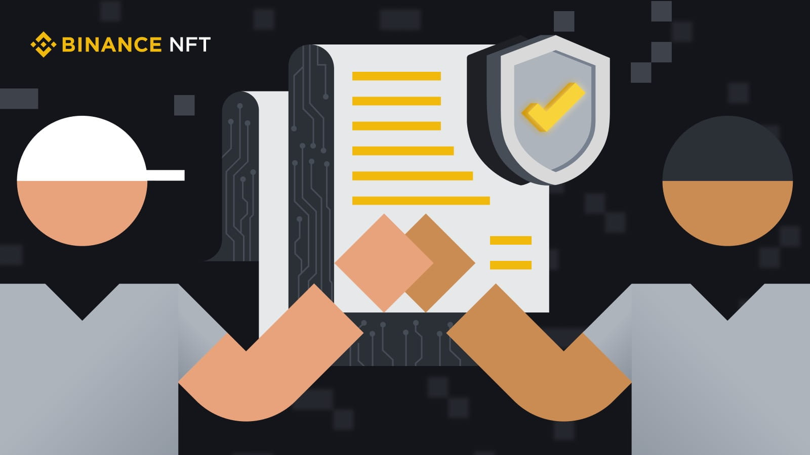
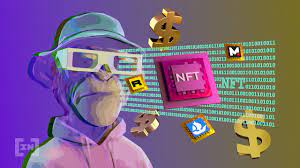
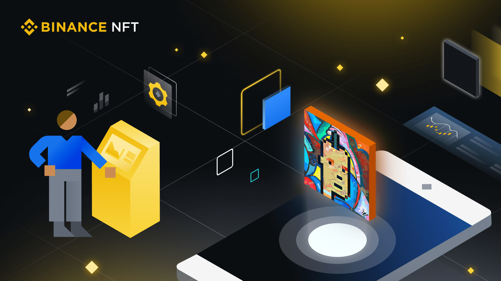

NFT
Все, что вам нужно знать о смарт-контрактах NFT
Основные пункты
- Смарт-контракты играют важную роль в блокчейн-пространстве и имеют множество вариантов применения.
- Смарт-контракты NFT, в частности, становятся все более значимыми, поскольку интерес к метавселенной и Web3 постоянно растет.
- В этой статье мы вкратце расскажем о смарт-контрактах NFT, их структуре и вариантах использования.
Узнайте, почему смарт-контракты получили такое название, как они работают, какими свойствами обладают и для чего их используют
Знаете ли вы, что NFT функционируют на блокчейне и управляются с помощью смарт-контрактов? Когда вы покупаете или продаете NFT, ваша сделка, скорее всего, осуществляется на основе смарт-контракта.
Узнайте больше об этом надежном программном решении и о том, как оно используется для проверки права собственности, борьбы с подделками и много другого.
Что такое смарт-контракт
Смарт-контракт — это программа на блокчейне, которая автоматически обеспечивает выполнение определенных действий при соблюдении заранее установленных условий. В децентрализованной системе две стороны могут взаимодействовать без посредника, обычно необходимого для осуществления транзакций, заменив его смарт-контрактом. Блокчейны, включая Bitcoin и Ethereum, используют смарт-контракты для облегчения транзакций и автоматизации процессов.
Почему смарт-контракты получили такое название: от англ. «smart» — умный? Эти фрагменты кода автоматизируют процессы и не допускают ошибок, вызванных человеческим фактором, тем самым сокращая время и затраты, связанные с традиционными контрактами. Помимо отсутствия ошибок, смарт-контракты обладают и другими преимуществами, которые делают их крайне важными для индустрии блокчейна.
Преимущества смарт-контрактов
- Они облегчают осуществление транзакций в системе, не требующей доверия, обеспечивая взаимодействие незнакомых сторон без необходимости доверять друг другу
- Они исключают необходимость в посредниках и бумажной работе, повышая скорость транзакций и снижая затраты.
- Они являются неизменяемыми и не могут быть отредактированы после размещения, что обеспечивает более высокую безопасность.
- Смарт-контракты, размещаемые на публичном блокчейне, прозрачны и доступны для просмотра всем
- Перед размещением смарт-контракт можно настроить, благодаря чему они являются универсальными для различных сфер применения.
- Они детерминированы и выполняют только запрограммированные функции
- У смарт-контрактов отсутствует риск ошибок, вызванных человеческим фактором, поскольку они автоматизированы.
При этом, смарт-контракты не имеют обязательной юридической силы, в отличии от традиционных контрактов. Это означает, что эти строки кода помогают осуществлять операции на блокчейне, но не могут способствовать выполнению обязательств в реальной жизни.
Создание NFT с помощью смарт-контрактов
Процесс создания NFT включает в себя преобразование изображений, видео, звуковых фрагментов и других цифровых файлов в криптоактивы на блокчейне. По сути, когда вы создаете NFT, вы настраиваете основной код смарт-контракта, который определяет характеристики ваших криптовалютных активов.
Для смарт-контрактов было разработано несколько стандартов для удобного взаимодействия NFT с приложениями. Например, существует несколько блокчейнов с инструментами для создания NFT, таких как TRON, EOS и Tezos. Без единого стандарта кода для смарт-контрактов и, непосредственно, NFT, NFT, созданные на разных платформах, не смогут торговаться на одном и том же NFT-маркетплейсе.
Стандарты смарт-контрактов для создания NFT
Среди различных стандартов, существующих в криптовалютном пространстве, стандарт Ethereum ERC-721 является одним из наиболее широко используемых, поскольку это первый стандарт для невзаимозаменяемых токенов на Ethereum. Будучи первым в области создания NFT, этот стандарт используется многими для создания и запуска NFT. Согласно ERC-721 все токены должны быть невзаимозаменяемыми и обладать уникальными идентификаторами — требование, которое другие стандарты могут не соблюдать.
Помимо ERC-721, существует еще один стандарт, используемый в основном в игровой среде NFT. Стандарт ERC-1155 был создан для того, чтобы в нем могли использоваться как взаимозаменяемые активы, например, внутриигровые валюты, так и невзаимозаменяемые, такие как скины, выпущенные ограниченной серией.
Смарт-контракты, NFT и метавселенная
Метавселенную можно рассматривать как трехмерную цифровую вселенную Метавселенную можно рассматривать как трехмерную цифровую вселенную, которая сочетает в себе финансовый, виртуальный и физический миры. NFT, блокчейн-игры и криптовалюты в том виде, в котором мы их знаем и используем, — все это часть метавселенной.
Если смарт-контракты лежат в основе NFT, не удивительно, что они также являются крайне важным инструментом в построении метавселенной. Например, NFT-искусство и игры — это два потенциальных аспекта современной метавселенной, которые могут поддерживаться смарт-контрактами. Денежные транзакции также можно облегчить с помощью смарт-контрактов, что устранит необходимость в третьей стороне и позволит избавиться от проблем, возникающих при взаимодействии в метавселенной.
Другие примеры использования смарт-контрактов, связанные с NFT
Подтверждение права собственности и проверка подлинности
Смарт-контракты, используемые для выпуска NFT, могут помочь в подтверждении права собственности и аутентификации данных. Если NFT размещены на публичных блокчейнах, информация о владении и времени создания может быть доступна любому.
Если рассматривать цифровые степени, учебные заведения могут выдавать студентам NFT, созданные на публичных блокчейнах. Работодатели, желающие нанять студентов, могут проверить подлинность диплома соискателя с помощью соответствующего обозревателя блоков. Этот инструмент позволяет любому получить доступ к публичной информации, записанной на блокчейне.
Это также может применяться в лицензировании NFT. Данные о передаче прав на изображение или звуковой файл могут быть созданы и легко переданы следующему владельцу NFT, и любой может проверить как право собственности, так и права, получаемые покупателями на основании лицензии.
Борьба с плагиатом и подделками
Смарт-контракты, лежащие в основе NFT, также могут помочь в борьбе с подделками и плагиатом. Создаваемые на блокчейне, смарт-контракты могут автоматически проверять время и место создания NFT или токена, то есть первый зарегистрированный адрес кошелька. Смарт-контракты также позволяют отслеживать право собственности на авторские продукты, бороться с фальшивыми сертификатами и подделками. Например, такие продукты могут быть автоматически отфильтрованы, если они не соответствуют определенным требованиям.
Упрощение транзакций
Благодаря смарт-контрактам процесс осуществления транзакций может быть улучшен за счет скорости и безопасности.
Смарт-контракты позволяют двум сторонам заключить соглашение и обеспечить выполнение ранее оговоренного результата при соблюдении условий. Задержки, связанные с отсутствием доверия, могут быть устранены, что повышает эффективность процесса заключения сделок. Стороны могут не доверять друг другу, но быть уверены в результате благодаря смарт-контракту, который осуществит сделку, как только условия контракта будут выполнены.
Смарт-контракты позволяют двум сторонам заключить соглашение и обеспечить выполнение ранее оговоренного результата при соблюдении условий. Задержки, связанные с отсутствием доверия, могут быть устранены, что повышает эффективность процесса заключения сделок. Стороны могут не доверять друг другу, но быть уверены в результате благодаря смарт-контракту, который осуществит сделку, как только условия контракта будут выполнены.
Рассмотрим процесс покупки дома. Как только покупатель выполнит все требования, такие как проверка кредитоспособности и первоначальный взнос, смарт-контракт может выдать средства продавцу и одновременно передать право собственности покупателю. Сделка, которая может включать передачу документа, подтверждающего право собственности, также будет записана на блокчейн, чтобы ее можно было легко проверить.
Заключение
Смарт-контракты крайне многофункциональны и могут быть адаптированы для применения практически в любой отрасли. Смарт-контракты являются основой для одного из самых популярных видов цифровых активов, поэтому по мере дальнейшего распространения NFT и расширения метавселенной, их важность будет продолжать расти.